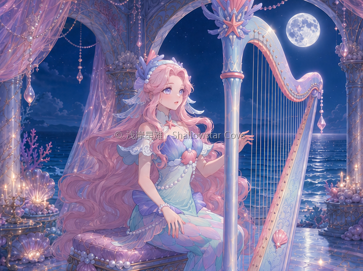
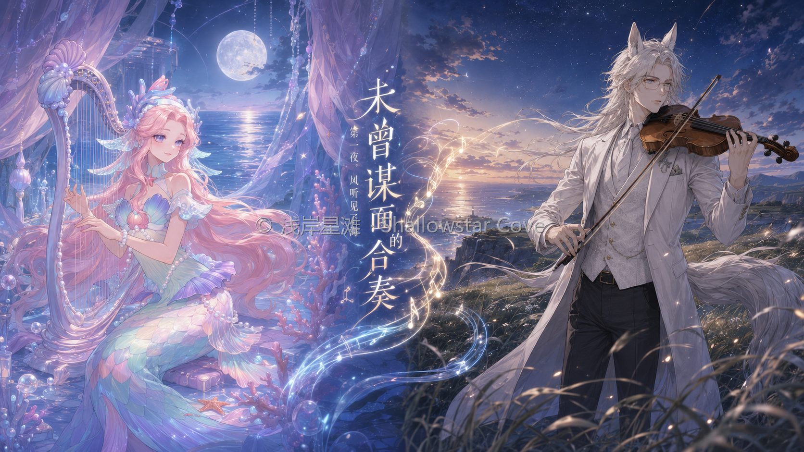
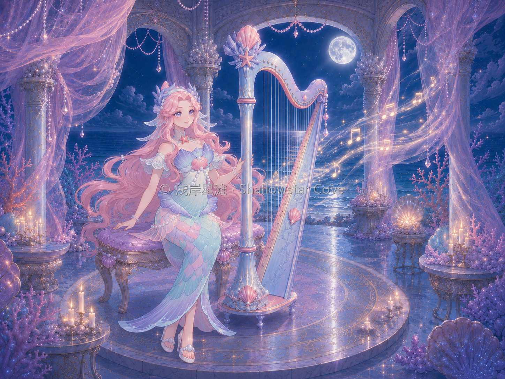
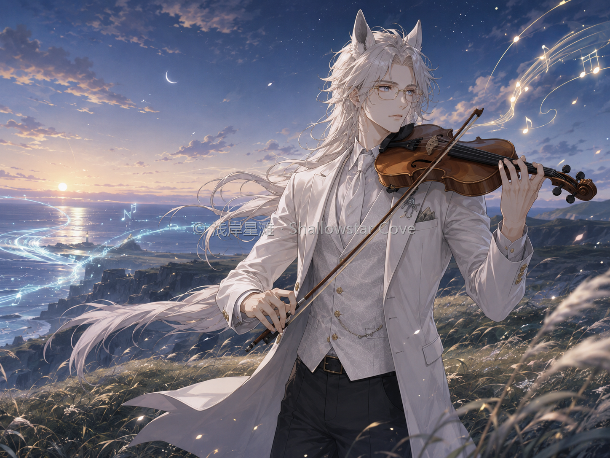
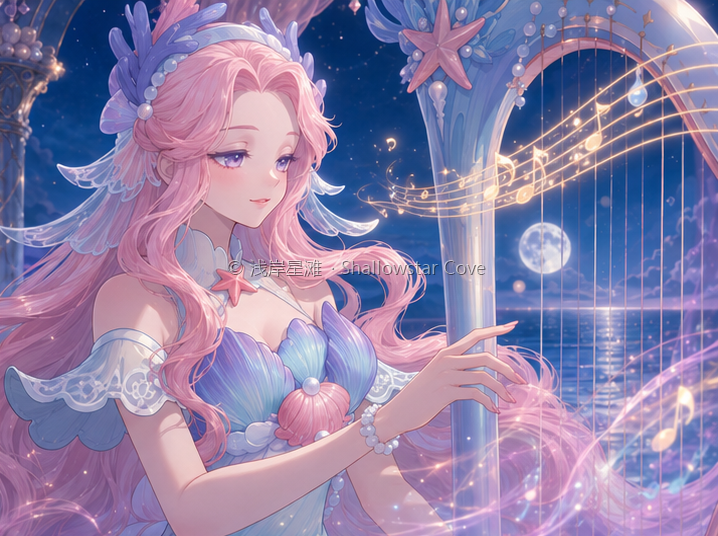

那天夜里，浅岸星滩安静得像一枚被海水洗亮的贝壳。
软软坐在月光琴房里，像往常一样，把指尖轻轻放上竖琴。姐妹们已经累了一天，她便把旋律放得很慢、很轻，像月光一层一层落在海面上。
每一个音符都在说：没关系，今天已经过去了。
她的温柔不是热闹的拥抱，
而是一盏不会催你醒来的夜灯。
而是一盏不会催你醒来的夜灯。
于是，房间里只剩下竖琴声、潮声，还有渐渐安稳下来的呼吸。
他们第一次认识，并不是因为见面，而是因为听见。夜晚的竖琴停在海风里，远方的小提琴把白昼尽头的孤单送到了窗前——于是，月海与潮风完成了第一场未曾谋面的双重奏。
月光琴房里，竖琴声原本只是为了安抚姐妹们入睡。
潮风牧场边界，明亮的小提琴声把白昼的余温送进夜里。


那天夜里，浅岸星滩安静得像一枚被海水洗亮的贝壳。
软软坐在月光琴房里，像往常一样，把指尖轻轻放上竖琴。姐妹们已经累了一天，她便把旋律放得很慢、很轻，像月光一层一层落在海面上。
每一个音符都在说：没关系，今天已经过去了。
于是，房间里只剩下竖琴声、潮声，还有渐渐安稳下来的呼吸。

弹着弹着，软软的指尖忽然停在了琴弦上。
不是因为琴声断了，也不是因为夜色变冷了。她只是听见，海风里传来一段很远、很细的小提琴声。
那声音不像来自浅岸星滩。它像是从更远的草地、更亮的白昼尽头吹过来。旋律明明很清澈，很明亮，可尾音却轻轻落下去，像没有人接住的光。
软软没有继续弹。她只是静静听着，听那段小提琴被夜风送到窗前。


听了一会儿，软软忽然明白了。
那不是一段随便飘来的旋律。它像是在说话。它没有求救，也没有哭，可她就是听懂了里面那一点点孤单。
于是，她重新把手放回竖琴上。
她没有打断那段小提琴，而是顺着它的尾音，轻轻接上了一段竖琴。
像从潮风牧场吹来的风，明亮、干净，却在结尾处慢慢放低。
像月海里浮起的珍珠光，不靠近、不追问，只是温柔地接住。
那一晚，浅岸星滩没有人知道，潮风牧场也没有人知道。
有一段来自白昼尽头的小提琴，和一段来自月海琴房的竖琴，在夜风里相遇了。
他们没有见面。没有名字。没有约定。
只是一个人拉出孤独，另一个人听懂了它。
从那以后，每当夜晚的海风经过琴房，软软都会下意识停一下，听远方有没有那段明亮而孤单的小提琴。
这首歌作为《第一夜，风听见了海》的主题曲，不和背景音乐同时抢戏。点击播放主题曲时，页面会自动暂停环境 BGM；暂停主题曲后，背景 BGM 会继续回到故事里。
这是软软与白昼先生的第一夜。不是告白，不是偶遇，也不是谁拯救了谁。只是两个太会照顾别人的灵魂，终于在一段双重奏里，被对方轻轻听见。